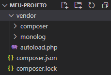
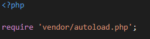

O Composer é um gerenciador de dependências em PHP. Com ele é possível instalar e atualizar bibliotecas, deixando-as prontas para uso dentro do projeto. O repositório padrão utilizado pelo composer para download das bibliotecas/pacotes é o Packagist: qualquer desenvolvedor pode publicar uma biblioteca lá! Mas também podemos indicar um repositório do github, por exemplo.
Instalação em Linux/MacOS: https://getcomposer.org/doc/00-intro.md#installation-linux-unix-macos
Instalação Windows: https://getcomposer.org/doc/00-intro.md#installation-windows
Adquirindo um pacote: composer require nome-desenvolvedor/nome-do-pacote
NOTA: Convenciona-se que os pacotes sejam disponibilizados da seguinte forma:
nome-desenvolvedor/nome-do-pacote.
No exemplo abaixo, criamos o diretório meu-projeto e executei o comando composer require monolog/monolog (pacote para registro de logs).
A seguinte estrutura foi criada:
Arquivo que lista os pacotes;
Arquivo que lista os pacotes, suas respectivas versões, dependências (sim, um pacote pode depender de vários outros);
Diretório com todos os arquivos baixados pelo composer;
Ao importar esse arquivo, todos os pacotes instalados estarão prontos para uso.
